1004E20 Engine - Dismantling and Reassembly following Op. [OP_1044E10] - Washing and checking dismantled components - Refitting cylinder head and oil sump - Does not include operations on the cylinder head and auxiliary unit
- Path
- Procedures > 10 ENGINE > 1004 ENGINE AND POWER UNIT > 1004E ENGINE ASSEMBLY INSPECTION AND REPAIRS > 1004E20 Engine - Dismantling and Reassembly following Op. [OP_1044E10] - Washing and checking dismantled components - Refitting cylinder head and oil sump - Does not include operations on the cylinder head and auxiliary unit
- Kind
- repair procedure (removal / refitting; the operation number is the code)
- Applies to
- engines: 2.4 JTD 10V; all production periods
- Interactive page
- https://sloeber94.github.io/elrnDB-lThss/en/#/727081
Applies to: all engines; all production periods
 Removing
Removing
 Refitting
Refitting- Rotate the crankcase through 180° on the overhaul stand.
1. Completely undo the side bolts (1a) loosended previously and remove the pressure pump (1b) complete with support (1c).
2. Undo the upper alternator bolt.
3. Undo the bolts (3a) and remove the alternator rear mounting bracket (3b).
4. Undo the lower bolt (4a) and remove the alternator (4b).
 | Description | Connector |
|---|---|---|
4b | Alternator | A010A |
5. Undo the bolts (5a) and remove the intermediate shaft support (5b).
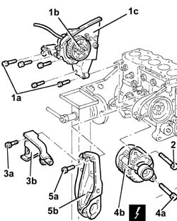
Applies to: all engines; all production periods
1. Undo the bolts (1a) and remove the crankshaft pulley (1b).
2. Undo the bolt (2a) and remove the fixed timing tensioner (2b).
3. Remove the timing belt.
4. Undo the bolts (4a) and remove the power steering pump (4b) complete with support (4c).
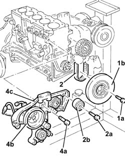
Applies to: all engines; all production periods
1. Undo the bolts (1a) and remove the air conditioning compressor (1b) complete with support (1c).
2. Undo the bolts (2a) and timing side power unit support (2b).
3. Undo the bolts for the heat exchanger water inlet pipe mounting bracket.
4. Undo and remove the engine oil filter using a suitable tool.
5. Unscrew the connector.
6. Remove the engine oil heat exchanger complete with pipes.
- Undo the connector and remove the turbocharger supply pipe.
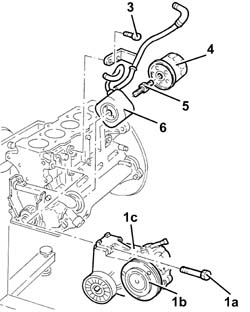
Applies to: all engines; all production periods
1. Fit the tool.
 | Description | Code | Function |
|---|---|---|---|
1 | Counter-torque | 1.860.846.000 | Flywheel lock |
2. Undo the bolt (left hand thread) (2a) and remove the toothed timing drive pulley (2b).
3. Undo the bolts (3a) and remove the flywheel (3b).
- Remove the tool (1).
| Description | Code | Function |
|---|---|---|---|
1 | Counter-torque | 1.860.846.000 | Flywheel lock |
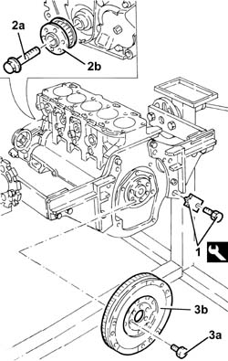
Applies to: all engines; all production periods
- Rotate the engine through 180° on the overhaul stand.
1. Fit the tool.
| Description | Code | Function |
|---|---|---|---|
1 | Flange | 1.860.815.000 | Crankshaft rotation |
2. Undo the bolts (2a) and remove the engine oil intake duct (2b).
3. Remove the O-ring.
4. Undo the bolts (4a) and remove the crankcase front cover (4b) with the oil pump incorporated.
5. Remove the seal.
- Rotate the crankshaft using the tool fitted previously until the cylinder concerned is at B.D.C.
6. Undo the bolts (6a) and remove the connecting rod cap (6b).
7. Remove the lower connecting rod half-bearing.
8. Remove the connecting rod-piston assembly.
9. Remove the upper connecting rod half-bearing.
- Carry out the same operations to remove the pistons and connecting rods for the remaining cylinders.
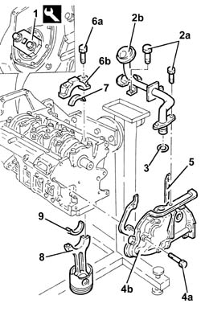
Applies to: all engines; all production periods
1. Check that the crankshaft endfloat corresponds to the recommended figures using a magnetic base and dial gauge.
 | Subject | Value |
|---|---|---|
1 | Crankshaft | mm |
- | End float | 0.049 - 0.211 |
- If the value for the crankshaft endfloat does not correspond with the recommended figures, when refitting, regrind the crankcase seat and use suitable oversize thrust washers.
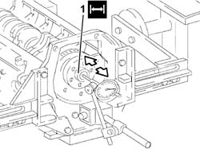
Applies to: all engines; all production periods
1. Undo the bolts (1a) and remove the crankcase rear cover (1b) with the oil seal incorporated.
2. Undo the bolts (2a) and remove the bearing caps (2b).
3. Remove the lower main journal half-bearings.
4. Remove the crankshaft.
5. Remove the upper main journal half-bearings.
6. Remove the thrust washers.
7. Undo the bolts (7a) and remove the jets (7b) from the crankcase.
8. Undo the bolt (8a) and remove the rpm and timing sensor (8b).
9. Remove the engine oil minimum pressure warning light sensor.
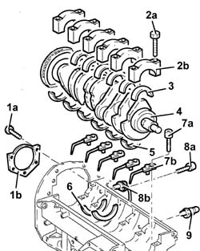
Applies to: all engines; all production periods
1. Undo the bolts (1a) and remove the crankcase (1b) from the mounting brackets, then place it on a special workbench.
2. Undo the bolts (2a) and remove the flywheel guard (2b).
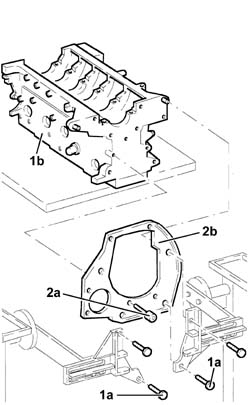
Applies to: all engines; all production periods
See in Op. 1028H60
- Undo the bolts and remove the intake duct from the oil pump.
See in Op. 1084B18
- Drill and remove the water/oil sealing plugs from the crankcase to allow for washing.
Applies to: all engines; all production periods
Refitting
Removing- Wash the dismantled components.
- Fit the water/oil sealing plugs in the crankcase using suitable fitting tools.
- Lubricate all the mechanical components with engine oil.
- Check that the cylinder head support surface does not have cracks or superficial grooves.
- Check that the planarity of the cylinder head support surface corresponds to the recommended figure; if this is not the case, regrind the cylinder head support surface.
| Subject | Value |
|---|---|---|
. | Cylinder block/crankcase | mm |
- | Cylinder head support surface flatness | < 0.1 |
1. Measure the cylinder bore diameter using the diagram illustrated.
| Subject | Value | |
|---|---|---|---|
1 | Cylinder block/crankcase | mm | |
- | Cylinder liner bore | 82.000 - 82.010 | |
- | - | 82.010 - 82.020 | |
- | - | 82.020 - 82.030 |
- Check that the taper of the cylinder liners/bores is within the recommended limits.
| Subject | Value |
|---|---|---|
. | Cylinder block/crankcase | mm |
- | Cylinder liner taper | < 0.005 |
- Check that the ovality of the cylinder liners/bores is within the recommended limits.
| Subject | Value |
|---|---|---|
. | Cylinder block/crankcase | mm |
- | Cylinder liner ovality | < 0.05 |
- If the cylinder bore measurements are not within the recommended limits, ream the cylinder bores following the recommended oversizes.
| Subject | Value |
|---|---|---|
. | Cylinder block/crankcase | mm |
- | Cylinder liner oversize | 0.1 |
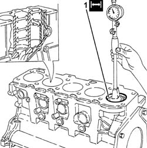
Applies to: all engines; all production periods
1. Fit the bearing caps.
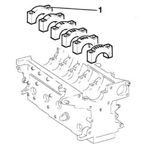
Applies to: all engines; all production periods
1. Tighten the bearing cap bolts (1a) to the recommended torque using the angular tightening tool (1b).
 | Value - daNm | Fastening | Component | Ø |
|---|---|---|---|---|
1a | (engine crankcase side) 2.5 + 100° | Bolt | MAIN BEARING CAPS | M12 |
| Description | Code | Function |
|---|---|---|---|
1b | Torque wrench | 1.860.942.000 | Angular tightening of bearing cap bolts |
2. Check that the diameter of the main journal seats is within specified limits.
| Subject | Value |
|---|---|---|
2 | Bearing caps | mm |
- | Main journal seat diameter | 63.691 ÷ 63.732 |
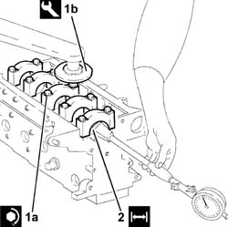
Applies to: all engines; all production periods
- Check that there are no deposits or blockages in the crankshaft lubrication ducts.
- Check that the diameter of the main journals corresponds to the recommended figures.
| Subject | Value | |
|---|---|---|---|
. | Crankshaft | mm | |
- | Main journal diameter | 59.994 ÷ 60.000 | |
- | - | 59.987 ÷ 59.993 | |
- | - | 59.982 ÷ 59.986 |
- If the diameter of the main journals is not correct, they should be reground to the recommended undersize.
| Subject | Value |
|---|---|---|
. | Crankshaft | mm |
- | Main journal undersize | 0.127 |
- Check that the diameter of the crankpins corresponds to the recommended figures.
| Subject | Value | |
|---|---|---|---|
. | Crankshaft | mm | |
- | Crankpin diameter | 50.799 ÷ 50.805 | |
- | - | 50.793 ÷ 50.799 | |
- | - | 50.787 ÷ 50.793 |
- If the diameter of the crankpins is not correct, they should be reground to the recommended undersize.
| Subject | Value |
|---|---|---|
. | Crankshaft | mm |
- | Crankpin undersize | 0.127 |
See in Op. 1028H58
- Check that the small end bush internal diameter is within the recommended limits; if not, replace the worn small end bush.
| Subject | Value |
|---|---|---|
. | Small end bush | mm |
- | Inner diameter | 26.006 - 26.012 |
- Check that the inner diameter of the piston bushes corresponds to the recommended figures; if not, replace the piston complete with piston rings, gudgeon pin and bushes.
| Subject | Value |
|---|---|---|
. | Pistons | mm |
- | Piston bush internal diameter | 25.999 ÷ 26.004 |
- Check that the outer diameter of the gudgeon pins is within the recommended limits; if not, replace the worn gudgeon pins.
| Subject | Value |
|---|---|---|
. | Gudgeon pins | mm |
- | Outer diameter | 25.982 ÷ 25.987 |
- Fit the piston rings in the cylinder bore and check that the opening between the ends is within the recommended values; if this is not the case, replace the circlips.
| Subject | Value |
|---|---|---|
. | Piston rings | mm |
- | 1st piston ring gap | 0.25 ÷ 0.40 |
- | 2nd piston ring gap | 0.25 ÷ 0.50 |
| Subject | Value |
|---|---|---|
. | Oil scaper ring | mm |
- | Oil scraper ring gap | 0.25 ÷ 0.50 |
- Check that the outer diameter of the pistons corresponds to the recommended figures; if not, replace the piston complete with piston rings and gudgeon pin.
| Subject | Value | |
|---|---|---|---|
. | Pistons | mm | |
- | Outer diameter | 81.920 ÷ 81.930 | |
- | - | 81.930 ÷ 81.940 | |
- | - | 81.940 ÷ 81.950 |
1. Check that the axial clearance (1a) between the second ring (1b) and the housing in the piston (1c) corresponds to the recommeded figure.
| Subject | Value |
|---|---|---|
1a | Piston rings | mm |
- | End float | 0.020 ÷ 0.060 |
- Check that the axial clearance between the oil scraper ring and the housing in the piston corresponds to the recommeded figures.
| Subject | Value |
|---|---|---|
. | Oil scaper ring | mm |
- | End float | 0.030 - 0.065 |
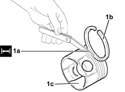
Applies to: all engines; all production periods
1. Fit the caps (1b) on the connecting rods (1a) and secure them tightening the bolts (1c) to the recommended torque.
| Value - daNm | Fastening | Component | Ø |
|---|---|---|---|---|
1c | 2.5 + 60° | - | CONNECTING ROD CAPS | M9 |
- Use the special tool for the angular tightening of the connecting rod cap bolts.
| Description | Code | Function |
|---|---|---|---|
. | Torque wrench | 1.860.942.000 | Angular tightening of bearing cap bolts |
2. - Check that the diameter of the big end corresponds to the recommended figures; if not, replace the connecting rods.
| Subject | Value |
|---|---|---|
2 | Connecting rods | mm |
- | Big end diameter | 53.883 ÷ 53.923 |
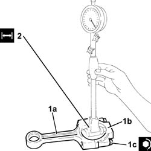
Applies to: all engines; all production periods
See in Op. 1028H60
See in Op. 1084B18
- Fit the intake duct and secure it using the bolts.
- Check that there are no signs of seizing on the flywheel ring gear teeth; if this is not the case, replace it.
- Fit the flywheel guard and tighten the bolts.
- Fit the crankcase on the overhaul stand and secure it using the bolts.
- Fit the minimum engine oil pressure warning light sensor and tighten it to the recommended torque.
| Value - daNm | Fastening | Component | Ø |
|---|---|---|---|---|
. | 2.7 ÷ 4.0 | - | MINIMUMM ENGINE OIL PRESSURE WARNING LIGHT SENSOR |
- Fit the rpm and timing sensor and secure it using the bolt.
- Fit the jets on the crankcase and secure them using the bolt.
- Fit the thrust washers on the fourth bearing support.
- The following must be determined for the selection of main journal half-bearings:
- the numerical code stamped on the flywheel;
- the paint mark, if present, next to the main journals.
- Below is an example of the identification of main journal grades:
- 1. Crankpin identification numerical code: the number on the left refers to the first timing side bearing; for 4 cylinder engines, there is an "N" in place of the number for the 5th bearing
- 2. Main journal identification numerical code: the first number on the left refers to the first timing side bearing; for 4 cylinder engines, there is an "N" in place of the number for the 6th bearing
- 3. Series of numbers (if present), in groups of two digits, which indicate the dimensions (thousandth part) of the main journals: the first two numbers on the left refer to the first timing side bearing
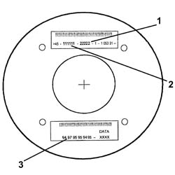
Applies to: all engines; all production periods
- For the identification of the main journal grade, refer to the numerical code for reference 2.
- In the case of the example, the numbers 111111 indicate that all six bearings are Grade A (red) as indicated in the Table.
- A further method for identifying the grade of the bearings is to read reference 3 (if present) in the diagram.
- In the case of the example, the number 94 (first on the left) corresponds to the dimensions 59.994 for the first timing side bearing which, as indicated in the Table, identifies Grade A (red); the same method should be applied for other groups of two digits for the same reference 3 (97 - 95 - 95 - 94 - 95).
- Bearing grade A - Normal, diameter (mm) 59.994 - 60.000, RED paint mark, numerical code 1 (94 00)°
- Bearing grade B - Normal, diameter (mm) 59.987 - 59.993, BLUE paint mark, numerical code 2 (87 93)°
- Bearing grade C - Normal, diameter (mm) 59.982 - 59.986, YELLOW paint mark, numerical code 3 (82 86)°
- Bearing grade D - Undersize, diameter (mm) 59.867 - 59.873, BROWN paint mark, numerical code 6 (67 73)°
- Bearing grade E - Undersize, diameter (mm) 59.860 - 59.866, GREEN paint mark, numerical code 7 (60 66)°
- Bearing grade F - Undersize, diameter (mm) 55.885 - 59.859, BLACK paint mark, numerical code 8 (55 59)°
- (*) 0.127 mm undersize
- (°) Last two numbers (thousandth part) of the main journal dimensions
- In the case of the usage of a crankshaft where the maximum undersize for the bearings is 0.127 mm through grindings, the grade should be selected through the measurement of the diameter of the bearing using the Table as a reference.
- Having defined the grade and the colour of each new or reground crankshaft bearings, it is necessary to select the thickness of the bearings that should be the same colour as the corresponding bearing; the pair of half-bearings required can be ordered from the Parts Dept. by quoting the order no.
- The above is designed to guarantee the optimum operational clearances for all the bearings.
- Lastly, we wish to point out that, generally, the clearance between the main journal and the half-bearing, obtained through the selection method indicated above, should be within the following values:
- Minimum: 0.025 mm - Maximum: 0.052 mm; this value can be measured, as a final check, using the calibrated wire (plastic gauge).
1. Fit the bolts (1a) and fasten the jets (2b) to the crankcase at the recommended torque.
2. Fit the bolt (3a) and fasten the rpm and timing sensor (3b).
| Value - daNm | Fastening | Component | Ø |
|---|---|---|---|---|
1a | 0.9 - 1.2 | Bolt | PISTON COOLING NOZZLES |
| Value - daNm | Fastening | Component | Ø |
|---|---|---|---|---|
3b | 1.8 - 2.7 | - | ENGINE RPM AND TIMING SENSOR |
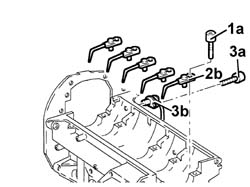
Applies to: all engines; all production periods
- Fit the main journal half-bearings in the cylinder block/crankcase.
- Fit the crankshaft in the crankcase.
1. Fit the main bearing caps complete with half-bearings.
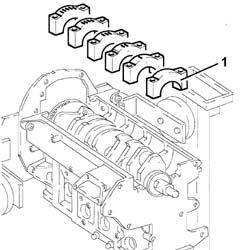
Applies to: all engines; all production periods
1. Tighten the bearing cap bolts (1a) to the recommended torque using the angular tightening tool (1b).
| Value - daNm | Fastening | Component | Ø |
|---|---|---|---|---|
1a | 2.5 + 100° | Bolt | MAIN BEARING CAPS | M12 |
| Description | Code | Function |
|---|---|---|---|
1b | Torque wrench | 1.860.942.000 | Angular tightening of bearing cap bolts |
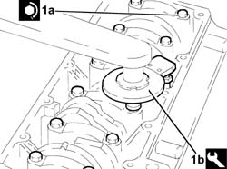
Applies to: all engines; all production periods
1. Fit the tool.
| Description | Code | Function |
|---|---|---|---|
1 | Flange | 1.860.815.000 | Crankshaft rotation |
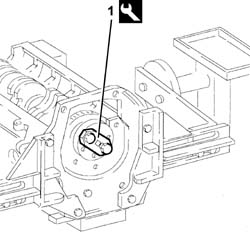
Applies to: all engines; all production periods
- Rotate the crankcase through 90° on the overhaul stand.
- Rotate the crankshaft using the tool fitted previously until the cylinder concerned is at B.D.C.
1. Fit the piston-connecting rod assembly (1a) complete with half-bearing using the tool (1b).
2. Fit the connecting rod cap (2a) complete with half-bearing and secure it without tightening the bolts (2b).
- Carry out the same operations to refit the pistons and connecting rods for the remaining cylinders.
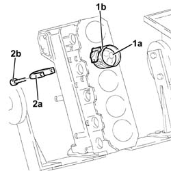
Applies to: all engines; all production periods
- Rotate the crankcase through 90° on the overhaul stand.
1. Tighten the connecting rod cap bolts (1a) to the recommended torque using the angular tightening tool (1b).
| Value - daNm | Fastening | Component | Ø |
|---|---|---|---|---|
1a | 2.5 + 60° | Bolt | CONNECTING ROD CAPS | M9 |
| Description | Code | Function |
|---|---|---|---|
1b | Torque wrench | 1.860.942.000 | Angular tightening of bearing cap bolts |
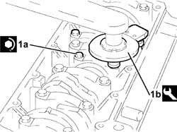
Applies to: all engines; all production periods
1. Fit the crankcase rear cover (1a) with built in oil seal using a suitable tool (1b).
2. Tighten the crankcase rear cover bolts to the recommended torque.
| Value - daNm | Fastening | Component | Ø |
|---|---|---|---|---|
2 | 0.9 - 1.2 | Bolt | CRANKCASE REAR COVER | M6 |
- Remove the tool.
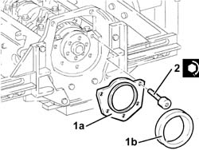
Applies to: all engines; all production periods
- Rotate the crankshaft so that cylinder no. 1 is at T.D.C.
1. Fit the crankcase front cover complete with oil pump (1a) and gasket (1b) with the timing references aligned as indicated previously.
2. Tighten the crankcase front cover bolts, complete with oil pump, to the recommended torque.
| Value - daNm | Fastening | Component | Ø |
|---|---|---|---|---|
2 | 0.9 - 1.3 | Bolt | FRONT COVER CRANKCASE COMPLETE WITH OIL PUMP | M6 |
3. Fit the engine oil intake duct (3a) complete with O-Ring (3b) and secure it using the bolts (3c).
| Value - daNm | Fastening | Component | Ø |
|---|---|---|---|---|
3c | 0.9 - 1.3 | - | OIL SECTION PUMP | - |
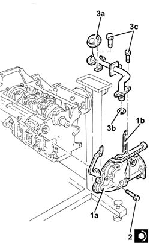
Applies to: all engines; all production periods
- Apply the recommended sealant to the entire perimeter of the crankcase sump.
 | Description | Qty. | Component | Type | Classification |
|---|---|---|---|---|---|
. | Dow Corning 7091 | - | - | Silicone sealant | - |
1. Fit the crankcase sump.
2. Tighten the side bolts (2a) fixing the crankcase sump to the recommended torque using the tool (2b).
| Value - daNm | Fastening | Component | Ø |
|---|---|---|---|---|
2a | (engine crankcase side) 0.9 - 1.2 | Side bolts | CRANKCASE SUMP | M6 |
| Description | Code | Function |
|---|---|---|---|
2b | Spanner | 1.860.833.000 | Loosen/tighten crankcase sump side bolts |
3. Tighten the front and rear bolts (3a) fixing the crankcase sump to the recommended torque using the tool (3b).
| Value - daNm | Fastening | Component | Ø |
|---|---|---|---|---|
3a | (engine crankcase side) 2.1 - 2.6 | Front and rear bolts | CRANKCASE SUMP | M8 |
| Value - daNm | Fastening | Component | Ø |
|---|---|---|---|---|
3a | (engine crankcase side) 2.3 - 3.3 | Front and rear bolts | CRANKCASE SUMP | M8 |
| Description | Code | Function |
|---|---|---|---|
3b | Spanner | 1.860.833.000 | Loosen/Tighten front and rear crankcase sump bolts |
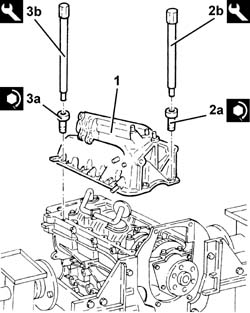
Applies to: all engines; all production periods
- Rotate the engine through 180° on the overhaul stand.
1. Fit the tool.
| Description | Code | Function |
|---|---|---|---|
1 | Counter-torque | 1.860.846.000 | Flywheel lock |
2. Fit the flywheel (2a) and tighten the fixing bolts (2b) to the recommended torque using thread-locking agent.
| Value - daNm | Fastening | Component | Ø |
|---|---|---|---|---|
2b | (crankshaft side) 14.7 - 21.2 | Bolt with thread-locking agent | ENGINE FLYWHEEL | M12 |
3. Fit the toothed drive pulley (3a) for the timing belt and tighten the (left hand thread) bolt (3b) to the recommended torque.
| Value - daNm | Fastening | Component | Ø |
|---|---|---|---|---|
3b | (crankshaft side) 32.9 - 44.1 | Bolt (left hand thread) | TOOTHED DRIVE PULLEY | M16 |
- Remove the tool.
| Description | Code | Function |
|---|---|---|---|
. | Counter-torque | 1.860.846.000 | Flywheel lock |
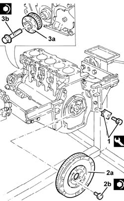
Applies to: all engines; all production periods
1. Measure the piston projection in two places at 180° on the gudgeon pin axis using the tool and take the average of the two values measured for each piston.
| Description | Code | Function |
|---|---|---|---|
1 | Dial gauge support | 1.870.404.000 | Piston projection from cylinder head support plane check |
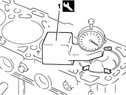
Applies to: all engines; all production periods
- Select the correct size cylinder head gasket depending on the maximum value between of the averages of the projection for each individual piston.
| Subject | Value |
|---|---|---|
. | Cylinder head gasket | mm |
- | Shim (no reference) | 0.770 ÷ 0.870 |
- | Shim (one reference) | 0.870 ÷ 0.970 |
- | Shim (two references) | 0.970 ÷ 1.070 |
| Subject | Value |
|---|---|---|
. | Cylinder head gasket | mm |
- | Average maximum piston projection | 0.014 ÷ 0.104 |
- | Average maximum piston projection | 0.105 ÷ 0.205 |
- | Average maximum piston projection | 0.206 ÷ 0.294 |
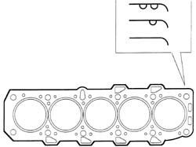
Applies to: all engines; all production periods
- Place the cylinder head centering bushes on the cylinder block.
- Fit the cylinder head gasket selected.
- Position the cylinder head on the cylinder block/crankcase.
1. Tighten the cylinder head bolts (1a) to the recommended torque using the angular tightening tool (1b).
| Value - daNm | Fastening | Component | Ø |
|---|---|---|---|---|
1a | (engine crankcase side) 2.0 + 2.0 + 90* + 90° + 90° | Bolt | CYLINDER HEAD | M10 |
| Description | Code | Function |
|---|---|---|---|
1b | Torque wrench | 1.860.942.000 | Cylinder head bolts angular tightening |
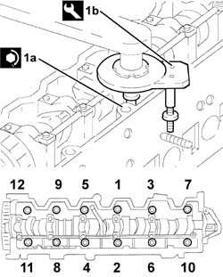
Applies to: all engines; all production periods
- Fit the tappet cover, complete with a new gasket, and secure it tightening the bolts to the recommended torque.
| Value - daNm | Fastening | Component | Ø |
|---|---|---|---|---|
. | (cylinder head side) 0.9 -1.2 | Bolt | CAM COVER | M6 |
- Place the turbocharger oil supply pipe in its housing and secure it to the cylinder block/crankcase using a new connector.
- Fit the heat exchanger complete with pipes.
- Tighten the engine oil heat exchanger connector to the recommended torque.
| Value - daNm | Fastening | Component | Ø |
|---|---|---|---|---|
. | 3.3 ÷ 4.8 | Connector | ENGINE OIL HEAT EXCHANGER | - |
- Place the engine oil filter in its housing and tighten it fully by hand after having lubricated the gasket using engine oil.
- Fasten the heat exchanger water inlet pipe mounting bracket using the bolts.
- Fit the mounting complete with power assisted steering pump and secure it using the bolts.
- Fit the fixed timing tensioner and secure it by tightening the bolt to the recommended torque.
| Value - daNm | Fastening | Component | Ø |
|---|---|---|---|---|
. | 2.3 ÷ 3.3 | Bolt | TIMING BELT FIXED TENSIONER | M8 |
- Fit the intermediate shaft support and secure it using the bolts.
- Fit the plates connecting the crankcase sump to the intermediate shaft support and secure them using the bolts.
- Fit the mounting complete with pressure pump and secure it using the bolts.
1. Undo the oil pump bolt shown in the diagram.
- Temporarily fit the toothed timing drive belt on the toothed drive pulley.
2. Fit the tool (2a) and fasten it using the calibrated screw (2b).
| Description | Code | Function |
|---|---|---|---|
2a | Template | 1.860.905.000 | Engine tuning |
| Description | Code | Function |
|---|---|---|---|
2b | Calibrated screw | 1.860.905.010 | Engine tuning |
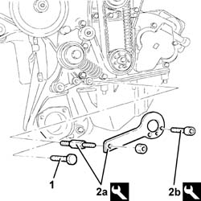
Applies to: all engines; all production periods
1. Rotate the driven toothed pulley until the timing references are aligned.
2. Fully fit the toothed timing drive belt.
3. Use a screwdriver for leverage in the opening (3a) until the reference for the tensioner (3b) is aligned with the opening reference (3c) and, in this position, tighten the nut (3d) for the belt tensioner to the recommended torque.
| Value - daNm | Fastening | Component | Ø |
|---|---|---|---|---|
3d | 4.2 - 5.2 | Nut | TIMING BELT TENSIONER | M10 |
- Remove the tools.
| Description | Code | Function |
|---|---|---|---|
. | Template | 1.860.905.000 | Engine tuning |
| Description | Code | Function |
|---|---|---|---|
. | Calibrated screw | 1.860.905.010 | Engine tuning |
- Tighten the oil pump bolt removed previously.
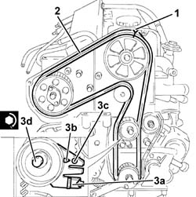
Applies to: all engines; all production periods
1. Fit the tool in the special opening to keep the automatic belt tensioner for the engine components drive belt in the "fixed" position.
| Description | Code | Function |
|---|---|---|---|
1 | Lock | 1.870.645.000 | Retaining tensioner for various components drive belt |
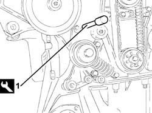
Applies to: all engines; all production periods
- Fit the crankshaft pulley and tighten the bolts to the recommended torque.
| Value - daNm | Fastening | Component | Ø |
|---|---|---|---|---|
. | 2.3 - 3.3 | Bolt | CRANKSHAFT PULLEY | M8 |
- Fit the timin side power unit support and secure it using the bolts.
- Fit the air conditioning compressor complete with mounting and secure it using the bolts.
- Fit the timing belt covers and secure them using the bolts.
- Fit the power unit reaction rod mounting bracket and secure it using the bolts.
- Fit the auxiliary units drive belt fixed tensioner and secure it tightening the bolt to the recommended torque.
| Value - daNm | Fastening | Component | Ø |
|---|---|---|---|---|
. | 2.3 ÷ 3.3 | Bolt | SINGLE BELT FIXED TENSIONER ENGINE | M8 |
- Fit the alternator and secure it using the lower bolt.
- Fit the alternator rear mounting and secure it using the bolts.
- Tighten the upper alternator bolt.
- Fit the engine components single belt.
1. Rotate the fixed tensioner (1a) for the engine components drive belt using the tool (1b) until the tool (1c) is released, then tighten the bolt (1d) for the cam tensioner to the recommended torque.
| Description | Code | Function |
|---|---|---|---|
1b | Spanner | 1.860.968.000 | Tensioning engine components drive belt |
| Description | Code | Function |
|---|---|---|---|
1c | Lock | 1.870.645.000 | Retaining tensioner for various components drive belt |
| Value - daNm | Fastening | Component | Ø |
|---|---|---|---|---|
1d | 4.6 ÷ 6.6 | Bolt | COMPONENTS SINGLE BELT CAM BELT TENSIONER ENGINE | M10 |
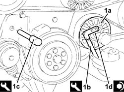
Applies to: all engines; all production periods
- Fit the plastic caps on the fixed tensioner and the cam belt tensioner for the engine components drive belt.
- Fit the fuel filter assembly and secure it using the nuts.
- Connect the return manifold fuel return pipe to the fuel filter.
- Fit the oil vapour separator complete with pipes and bracket and secure it using the nuts.
- Connect the condensation oil recovery pipe to the crankcase sump.
- Connect the oil vapour recovery pipe to the crankcase.
- Connect the water-oil heat exchanger coolant supply pipe to the thermostat.
- Connect the heat exchanger coolant outlet pipe to the manifold.
- Fit the exhaust manifold gasket.
- Fit the exhaust manifold, complete with turbocharager and E.G.R. valve and secure it tightening the nuts to the recommended torque.
| Value - daNm | Fastening | Component | Ø |
|---|---|---|---|---|
. | (cylinder head side) 2.3 -3.3 | Nut | EXHAUST MANIFOLD | M8 |
- Tighten the exhaust manifold bracket bolt to the cylinder block/crankcase.
- Tighten the exhaust gas recirculation pipe fastener bracket bolt.
- Fit the exhaust gas recirculation pipe gasket.
- Connect the exhaust gas recirculation pipe and secure it to the intake manifold using the nuts.
- Connect the turbocharger oil outlet pipe to the crankcase sump.
- Fit the turbocharger oil outlet pipe guard and secure it using the bolts.
- Connect the oil inlet pipe to the turbocharger.
- Fit the engine oil dipstick assembly and secure it using the bolts.
- Place a new pipe from the pressure pump to the single fuel manifold in its housing and secure it using the connectors without tightening them.
- Tighten the connector for the pipe from the pressure pump to the single fuel manifold, pump side, to the recommended torque using a spanner.
| Value - daNm | Fastening | Component | Ø |
|---|---|---|---|---|
. | (Pressure pump side) 2.1 - 2.8 | Connector | PRESSURE PUMP PIPE TO FUEL MANIFOLD | M12 |
- Tighten the connector for the pipe from the pressure pump to the single fuel manifold, fuel manifold side, to the recommended torque using a spanner.
| Value - daNm | Fastening | Component | Ø |
|---|---|---|---|---|
. | (Fuel manifold side) 2.1 - 2.8 | Connector | PRESSURE PUMP PIPE TO FUEL MANIFOLD | M14 |
- Connect the rubber pipe to the pressure pump.